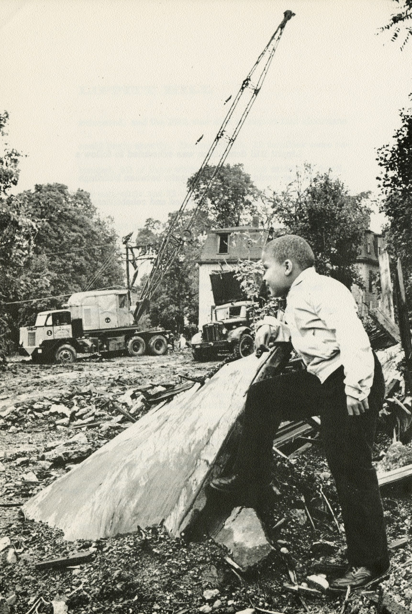

About
In 1959, Lippitt Hill, one of the oldest black neighborhoods in Providence — called by locals at the time "The East Side"— was slated for demolition. The result of racially motivated urban renewal, the project displaced hundreds of people, closed their businesses, and largely erased the vibrant community that once existed there. In 2017, Stages of Freedom brought together members of the community to tell stories of life on Lippitt Hill — their words can be viewed here.
About this Project: This site was created to preserve and share the stories of residents from the Lippitt Hill neighborhood, providing a digital space where their voices and memories can live on. The oral histories collected here were recorded during community events in 2017 under a special grant from the Heritage Harbor Foundation. These recordings capture first-hand accounts of life in this vibrant neighborhood before it was demolished in the 1960s By connecting these stories to their physical locations on a map, we hope to give visitors a sense of the community that once thrived here, and to honor the legacy of Lippitt Hill residents whose neighborhood was lost to urban renewal. How to Use This Site: The Stories page displays a map with markers indicating locations where former residents lived or frequented. Click on these markers to read their personal accounts and memories of life in Lippitt Hill. The History page provides context about urban renewal in Providence and the specific impact it had on the Lippitt Hill neighborhood, with historical photographs that help visualize this lost community. Acknowledgments: This project builds upon the important work done by Stages of Freedom, who organized and conducted the original oral history interviews with former Lippitt Hill residents. Special thanks to the Rhode Island Historical Society for providing access to photographs and historical documents that help tell this story. Most importantly, we're grateful to the former residents of Lippitt Hill who shared their memories and experiences, ensuring that the story of this neighborhood will not be forgotten.
***
This project is not associated with Stages of Freedom or any other organization/individual.

Boy looking at the Lippitt Hill Redevelopment Project construction.

Residents of Fox Point, a neighborhood that would face similar redevelopment.

Teachers and students at the Doyle Avenue School on Lippitt Hill in 1966.

Demolition of buildings in the Lippitt Hill neighborhood.